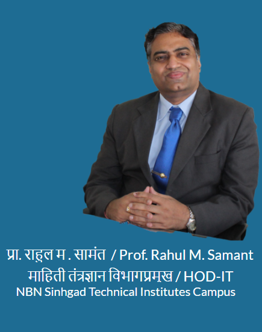

Welcome to EcoSystem
A comprehensive knowledge hub dedicated to mindful learning, academic planning, and student well-being. Browse the navigation tree to explore study resources, schedules, lab manuals, and much more.
📚 Learning & Academics
Access lab manuals, personalized learning paths, concept videos, subject overviews by AI, and historical timelines to deepen understanding across all IT subjects..
📝 Exams & Assessments
Prepare with subjective exams, mock oral vivas, online quizzes, paperless tests, and location-bound NBNSTIC-IT proctored MCQ exams.
🧘 Wellness & Growth
Manage stress, cultivate digital wellness, build actionable study plans, and develop a strong growth mindset through curated video resources.
💼 Career & Research
Sharpen employability skills, crack technical interviews, explore research methodology, publish innovations, and learn about IPR & patents.
🎮 Utilities & Games
Explore productivity tools, dopamine-detox brain games, department automated workflows, and philosophy resources for a balanced student life.
🔬 Special CS Topics
Deep-dive into visualized algorithms, CS fundamentals, software engineering series, OS, DBMS, TOC, CG and mathematics through interactive tools.